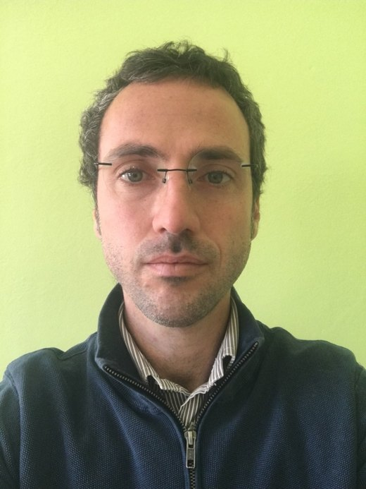
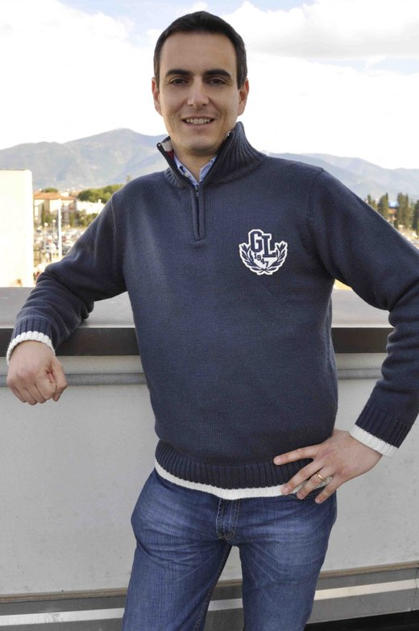
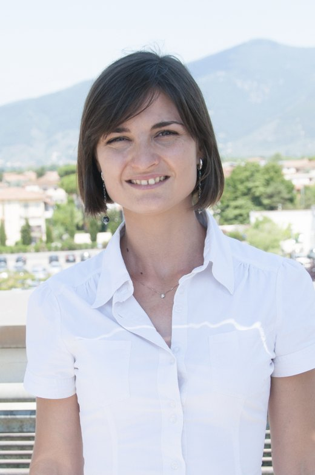

Florence MAPLab
Personal pages
A compact GitHub Pages structure for individual MAPLab profiles. Each page has profile information, research interests, CV highlights, teaching links, and an automatically filtered publication list loaded from one shared BibTeX file.
Faculty pages

Giovanni Anobile
Numerosity, attention, multisensory and sensorimotor number cognition.

Roberto Arrighi
Visual and auditory perception, timing, multisensory integration.
Alessandro Benedetto
Perception, sensorimotor integration, EEG, fMRI, eye movements.

Elisa Castaldi
Numerical cognition, dyscalculia, visual plasticity, fMRI.